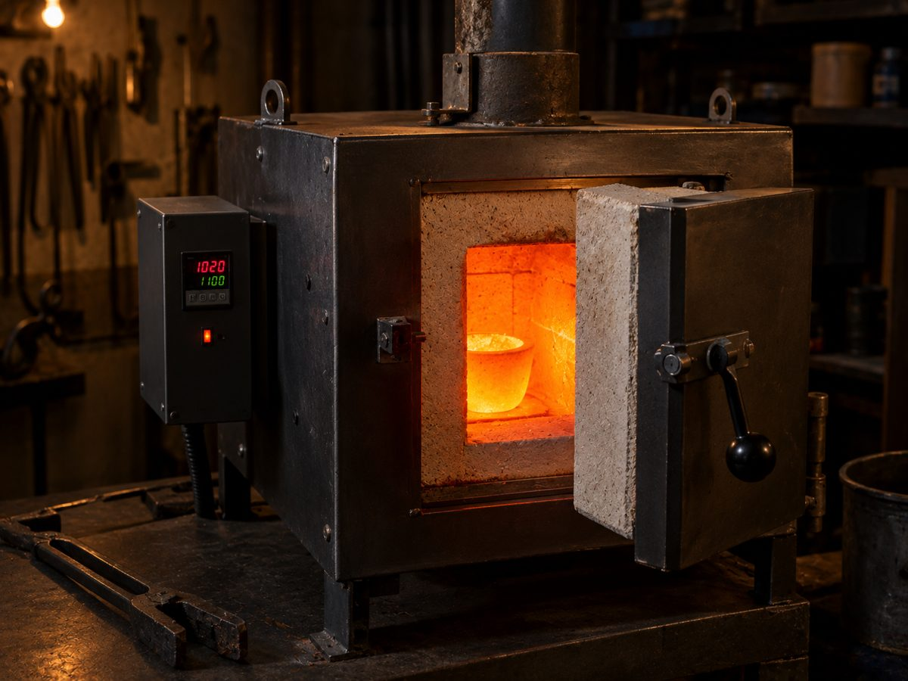
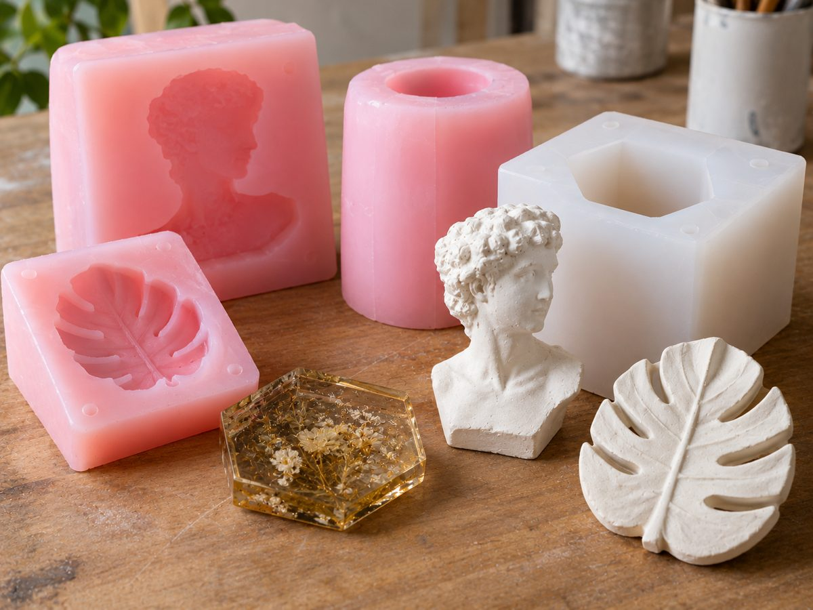
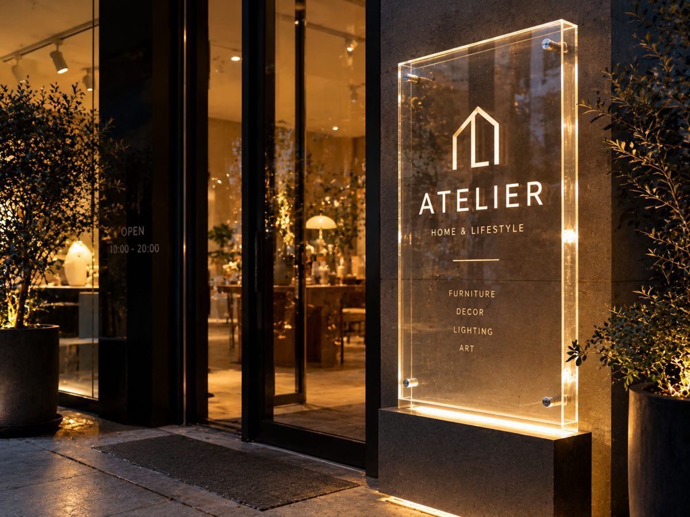

دورهی حضوری در کارگاه
کار عملی با ابزار و مواد کارگاه، در گروههای کوچک یا بهصورت خصوصی.
- ساخت بوته از آمادهسازی مواد تا پخت
- ساخت و عایقکاری کوره
- قالبگیری سیلیکونی و ریختهگری
۳۰ سال است که بوتهی سرامیکی ذوب فلز، کورهی ذوب و پخت، قالب سیلیکونی ریختهگری و سازههای طلق را در کارگاه خودمان طراحی و تولید میکنیم؛ دقیقاً با ابعاد و دمایی که کار شما لازم دارد.

جنس بوته و کوره به دمای ذوب فلز شما بستگی دارد. روی فلزتان بزنید تا ببینید چه بوته و چه کورهای لازم دارید.
هر محصول بر اساس سفارش ساخته میشود. ابعاد، دمای کاری و تعداد را بگویید تا قیمت و زمان تحویل را اعلام کنیم.
بوتهی نسوز برای ذوب طلا، نقره، مس، برنج و آلومینیوم؛ از بوتههای کوچک زرگری تا بوتههای بزرگ ریختهگری، با لبهی ریزش یا بدون آن.

کورهی الکتریکی و گازی برای ذوب فلز، پخت سرامیک و عملیات حرارتی، با بدنهی فلزی، عایق نسوز و کنترلر دیجیتال دما.

از نمونهی شما قالب سیلیکونی میسازیم تا بتوانید یک قطعه را بارها تکثیر کنید؛ برای رزین، گچ، بتن، شمع و فلزات کمذوب.

تابلوی سردر، ورودی، استند و باکس نمایش از طلق (پلکسی) با برش دقیق و نورپردازی، برای فروشگاهها و دفاتر.
مشتریهای ما از کارگاههای کوچک زرگری تا واحدهای صنعتی و آزمایشگاههای دانشگاهیاند.
بوتهی ذوب طلا و نقره و کورهی رومیزی
بوتههای بزرگ و کورهی ذوب آلومینیوم، برنج و مس
بوتهی آلومینایی و کورهی دما بالا برای پژوهش
قالب سیلیکونی برای رزین، گچ، بتن و مجسمه
کورهی پخت لعاب و بدنه
تابلو و سازهی طلق برای ورودی و ویترین
روش ساخت، کیفیت بوته را تعیین میکند: چقدر در برابر شوک حرارتی دوام میآورد و چند بار ذوب را تحمل میکند.
دوغاب سرامیکی در قالب گچی ریخته میشود تا دیوارهای یکنواخت و نازک بسازد؛ مناسب بوتههای کوچک و آزمایشگاهی.
مخلوط نسوز نیمهخشک در قالب فلزی فشرده میشود؛ بوتهای متراکم و محکم برای ذوبهای پرتکرار.
فشار یکسان از همهی جهات؛ بالاترین چگالی و عمر، برای بوتههای رسی-گرافیتی و سیلیکونکاربایدی صنعتی.
برای فرمها و اندازههای خاص که قالب آماده ندارند.
ساخت بوته، کوره و قالب سیلیکونی را از استادکارهای گروه یاد بگیرید. کلاسها زنده برگزار میشوند؛ حضوری در کارگاه یا آنلاین.
کار عملی با ابزار و مواد کارگاه، در گروههای کوچک یا بهصورت خصوصی.
برای علاقهمندانی که به کارگاه دسترسی ندارند؛ با پرسش و پاسخ در طول کلاس.
گروه صنعتی مهینی یک شرکت دانشبنیان در حوزهی مواد نسوز و تجهیزات حرارتی است که ۳۰ سال سابقهی ساخت بوته و کوره دارد. تیم ما مهندسان مواد و شیمی، استادکاران باتجربهی سرامیک و کورهسازی و مربیان آموزشی را کنار هم جمع کرده است.
ما هر سفارش را با شناخت دقیق کاربرد آن شروع میکنیم: چه فلزی، در چه دمایی، چند بار در روز. بعد جنس و روش ساخت را انتخاب میکنیم و قبل از تحویل، محصول را آزمایش میکنیم.
با شمارهی ۰۹۱۴۱۰۰۵۴۱۶ تماس بگیرید و نوع محصول، ابعاد، دمای کاری و تعداد را بگویید. قیمت، روش پرداخت و زمان تحویل را تلفنی هماهنگ میکنیم.
بله، محصولات با بستهبندی ایمن به سراسر ایران ارسال میشوند.
بخش «کدام بوته برای کدام فلز؟» را ببینید یا تماس بگیرید؛ مشاوره پیش از خرید رایگان است.
بوته را قبل از اولین ذوب، آرام و خالی گرم کنید تا رطوبت آن خارج شود. هیچوقت بوتهی سرد را مستقیم در کورهی داغ نگذارید و فلز سرد یا مرطوب را در بوتهی داغ نیندازید.
زمان دورهها بر اساس تعداد ثبتنامکنندگان تعیین میشود. تماس بگیرید تا زمان دورهی بعدی را اعلام کنیم.
پرداخت آنلاین نداریم؛ همهچیز تلفنی هماهنگ میشود.